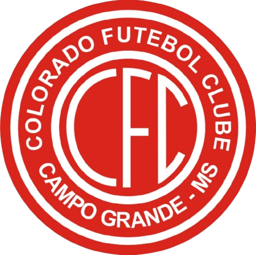
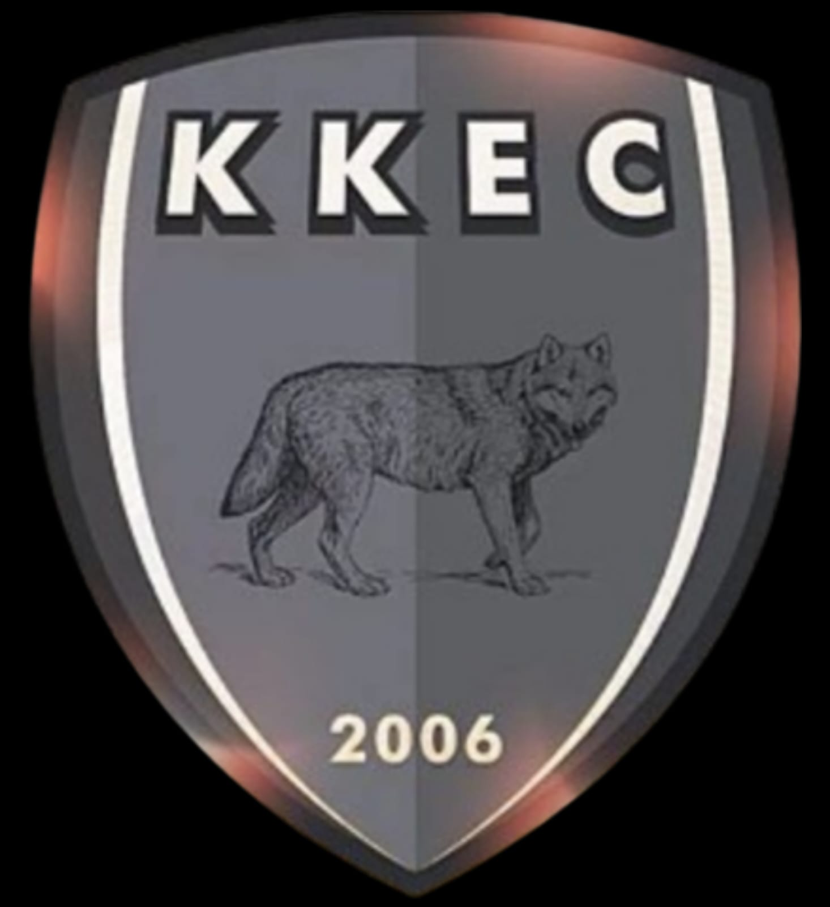
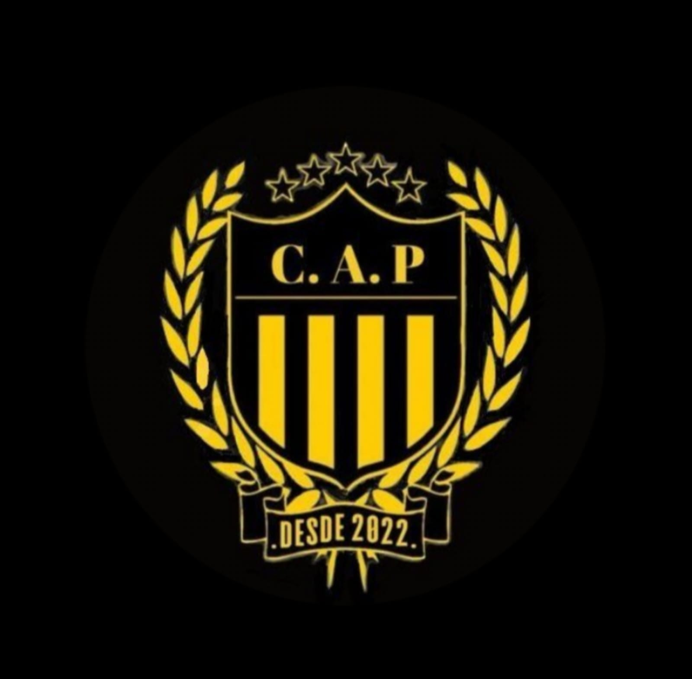

O Jovens Unidos F.C. é um time de futebol amador em crescimento, com forte presença nas redes sociais e grande engajamento na comunidade.

Colorado
KKEC
PenharolSua marca pode aparecer nas nossas redes sociais, jogos e conteúdos semanais.
Divulgação nas redes sociais
Repost dos jogadores
Visibilidade local
Presença semanal